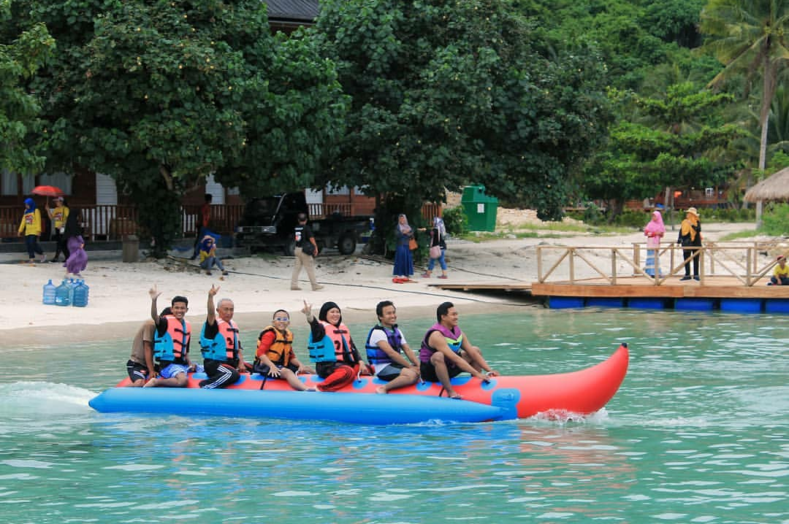
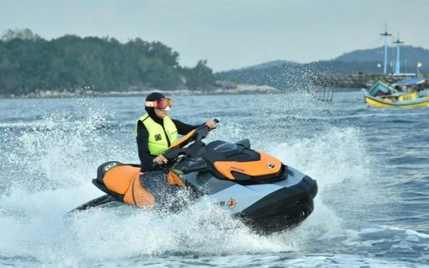

| HOME | Biodiversitas | Watersport | Penginapan | Masjid Apung |
WATERSPORTMenikmati kawasan pesisir pantai Pulau Tegal Mas bisa dilakukan dengan berbagai cara. Salah satunya dengan menjajal watersport seperti kano/ kayak, banana boat, jetsky, dan lainnya | ||||
|---|---|---|---|---|
|  | ||||
|  | ||||